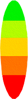
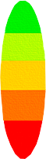
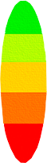
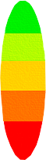

El objetivo del juego es aterrizar la nave con una velocidad menor a 5km/h.
Para poder encender la nave basta con mantener pulsado cualquer botón del teclado o pulsar la pantalla en caso de un dispositivo movil.Para poder reiniciar la partida, basta con pulsar el botón de reinicio el la pantalla del mismo juego.